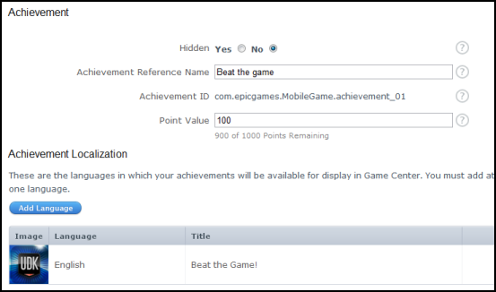
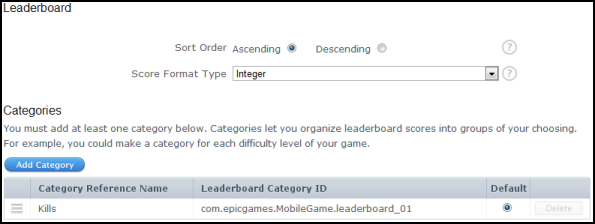

UDN
Search public documentation:
GameCenterJP
English Translation
中国翻译
한국어
Interested in the Unreal Engine?
Visit the Unreal Technology site.
Looking for jobs and company info?
Check out the Epic games site.
Questions about support via UDN?
Contact the UDN Staff
中国翻译
한국어
Interested in the Unreal Engine?
Visit the Unreal Technology site.
Looking for jobs and company info?
Check out the Epic games site.
Questions about support via UDN?
Contact the UDN Staff
UE3 ホーム > Mobile HomeJP > Unreal Engine 3: モバイル概要 > Unreal Engine 3: Apple iOS 概要 > Game Center
UE3 ホーム > ネットワーク & レプリケーション > Game Center
UE3 ホーム > ネットワーク & レプリケーション > Game Center
Game Center(ゲームセンター)
概要
Game Center は、Apple 社のオンラインゲームネットワークです。このネットワークを使用することによって、ユーザー同士で、接続、比較、競うことができます。「Unreal Engine 3」を使用して iOS デバイスのために開発されたゲームは、Game Center を使用することができるため、特別でコミュニティ主導のエクスペリエンスを提供することができます。
コンフィギュレーションの設定
GC は、iOS 版「Unreal Engine 3」によってサポートされています。これには、OnlineSubsystemGameCenter クラスを使用します。ただし、起動時に Login / Welcome back 画面が自動的に呼び出されるので、コンフィギュレーションファイルによって GC を有効 / 無効にすることができます。GC のテストを開発中に行う必要がない場合には、次のようにして、変数に true をセットすることができます。必要な場合には、false をセットします。
[OnlineSubsystemGameCenter.OnlineSubsystemGameCenter] bDisableGameCenter=true ; false
[OnlineSubsystemGameCenter.OnlineSubsystemGameCenter] bDisableGameCenter=true ; false UniqueAchievementPrefix=com.epicgames.exploreue3.achievement_ UniqueCategoryPrefix=com.epicgames.exploreue3.leaderboard_ EpicUniqueAchievementPrefix=com.epicgames.exploreue3.achievement_ EpicUniqueCategoryPrefix=com.epicgames.exploreue3.leaderboard_
OnlineSubsystemGameCenter のコンパイル
「Unreal Engine 3」は OnlineSubsystemGameCenter をプリコンパイルしてくれません。これは、ゲームに Game Center を使用されることが想定されていないためです。 OnlineSubsystemGameCenter をコンパイルするには、DefaultEngine.ini にある EditPackages のリストに追加する必要があります。
[UnrealEd.EditorEngine] +EditPackages=UTGame +EditPackages=UTGameContent +EditPackages=OnlineSubsystemGameCenter
achievement (成績)

achievement は他のプラットフォームとほぼ同じように機能します。ただし、GC では、初めて achievement のロック解除を行ったときに、オンスクリーンでメッセージが表示されません。ゲームコードによって achievement のロック解除を試みる場合は、まず、achievemnt がユーザーのためにまだロック解除されていないことを確認する必要があります。一般的なフローは次のようになります。- ゲームを起動します。(1 度実行する必要があります。ただし、それ以上実行しても問題はありません)。
- OnlineSub.PlayerInterface.AddReadAchievementsCompleteDelegate() を呼び出して、achievementのデータの読み取りが完了した通知を受けます。
- OnlineSub.PlayerInterface.ReadAchievements() を呼び出して、achievement を読み取り始めます。
- デリゲートの中では、achievement がすでに読み込まれているため、この時点で achievement のステートをクエリすることができます。
- プレイヤーがゲームをプレイし、achievement の基準を満たします。
- OnlineSub.PlayerInterface.GetAchievements() を呼び出して、すべての achievement のステートを取得します。
- 返された配列から識別子が一致する achievement を探します。
- achievement の識別子を achievement の配列に入れる添字として使用 しないで ください。なぜなら、achievement ID では配列のインデックスが 1 から始まるからです。(UnrealScript や他の多くの言語では、配列のインデックスが 0 から始まります)。
- bWasAchievedOnline が false の場合。
- UI の表示や音楽の再生などをします。
- OnlineSub.PlayerInterface.UnlockAchievement() を呼び出して、プレイヤーが achievement をロック解除したことを GC に通知します。
achievement の技術的詳細事項
GC のコードは、起動すると即座に achievement のダウンロードを開始します。したがって、ゲームのコードが実行される時までには、ダウンロードは完了しているはずです。しかし、安全を期すために、デリゲートを使って OnlineSub.PlayerInterface.ReadAchievements() 呼び出しを行うことによって、achievement のダウンロードが完了したことを確認するとともに、 OnlineSub.PlayerInterface.GetAchievements() が正しい値を返すことを確認するべきです。 内部的にはかなり複雑なプロセスが achievement について実行されています。achievement がロック解除されたときにユーザーがオフラインであった場合、GC はサーバーに通知しません。そのため、iOS デバイスのフラッシュディスクに保存されるローカルの achievement に関するステートを保守します。ユーザーが後で GC に接続した場合は、必ず、エンジンがリモートの achievement のステートとローカルの achievements のステートに相違がないかチェックするとともに、両者をマージし、UI を表示することなく achievements をロック解除します。achievement の例
本例では、achievement のハンドラ アクタ クラスが作成されることによって、achievement の呼び出しを転送できるようにしています。 もちろん、他のクラス (例 : GameInfo クラス) に移すことも可能です。achievement ハンドラの機能は、ペンディングしている achievement リストを保存する (複数の achievement が矢継ぎ早に得られた場合に備えて) とともに、非同期の関数を呼び出すことによって、ペンディングしているすべての achievement がロック解除されるまでそれらの間でループさせるというものです。 achievement をロック解除するには、achievement id をパラメータとして、YourAchievementHandler::UnlockAchievement() を呼び出します。この achievement id は、achievement id の末尾の数と一致していなければなりません。たとえば、 com.epicgames.exploreue3.achievement_01 という id をもつ achievement であれば、1 という achievement id をもつことになります。なお、achievement id は、通常、0 からではなく 1 から始まることに注意してください。 最初のチェックは、achievement id がペンディング中の achievement 配列に入っていることの確認です。これによって、achievement が複数回ロック解除されることを防ぎます。achievement ハンドラが現在 achievement を処理していない場合は、ペンディング中となっている achievement の処理を開始するとともに、ProcessingAchievements フラグを true にセットします。これによって、非同期の achievement 処理ループが開始されます。 ここから、achievement がサーバーから読み込まれたときに呼び出されるデリゲートが割り当てられるとともに、achievement を読み込むための非同期の呼び出しが実行されます。
class YourAchievementHandler extends Actor;
// Pending achievements
var array<int> PendingAchievements;
// True if we're currently processing achievements
var bool ProcessingAchievements;
/**
* Unlocks an achievement for the player
*
* @param AchievementId Which achievement to unlock
* @param LocalUserNum Local user index
*/
function UnlockAchievement(int AchievementId)
{
local OnlineSubsystem OnlineSubsystem;
local int PlayerControllerId;
// This achievement is already pending, and is in progress so just wait
if (PendingAchievements.Find(AchievementId) != INDEX_NONE)
{
return;
}
// Add the achievement id to the pending list
PendingAchievements.AddItem(AchievementId);
// If we're not processing achievements right now, process one now
if (!ProcessingAchievements)
{
// Connect to GameCenter and link up the achievement delegates
OnlineSubsystem = class'GameEngine'.static.GetOnlineSubsystem();
if (OnlineSubsystem != None && OnlineSubsystem.PlayerInterface != None)
{
// Grab the local player controller id
PlayerControllerId = GetALocalPlayerControllerId();
// Assign the read achievements delegate
OnlineSubsystem.PlayerInterface.AddReadAchievementsCompleteDelegate(PlayerControllerId, InternalOnReadAchievementsComplete);
// Read all achievements
OnlineSubsystem.PlayerInterface.ReadAchievements(PlayerControllerId);
// set true, to prevent this from being fired off again
ProcessingAchievements = true;
}
}
}
/**
* Returns a local player controller id. Same rules apply to Actor::GetALocalPlayerController().
*
* @return Returns a local player controller id
*/
function int GetALocalPlayerControllerId()
{
local PlayerController PlayerController;
local LocalPlayer LocalPlayer;
// Get the local player controller
PlayerController = GetALocalPlayerController();
if (PlayerController == None)
{
return INDEX_NONE;
}
// Get the local player information
LocalPlayer = LocalPlayer(PlayerController.Player);
if (LocalPlayer == None)
{
return INDEX_NONE;
}
return LocalPlayer.ControllerId;
}
class YourAchievementHandler extends Actor;
// Array of all downloads achievements
var array<AchievementDetails> DownloadedAchievements;
/**
* Called when the async achievements read has completed
*
* @param TitleId The title id that the read was for (0 means current title)
*/
function InternalOnReadAchievementsComplete(int TitleId)
{
local OnlineSubsystem OnlineSubsystem;
local int AchievementIndex, PlayerControllerId;
// Ensure we have an online subsystem, and an associated player interface
OnlineSubsystem = class'GameEngine'.static.GetOnlineSubsystem();
if (OnlineSubsystem == None || OnlineSubsystem.PlayerInterface == None)
{
return;
}
// Grab the local player controller id
PlayerControllerId = GetALocalPlayerControllerId();
// Clear the currently downloaded achievements array as we're copying the fresh data
DownloadedAchievements.Remove(0, DownloadedAchievements.Length);
// Read the achievements into the downloaded achievements array
OnlineSubsystem.PlayerInterface.GetAchievements(PlayerControllerId, DownloadedAchievements, TitleId);
// Grab all of the achievements
if (DownloadedAchievements.Length > 0 && PendingAchievements.Length > 0)
{
// Grab the achievement index
AchievementIndex = DownloadedAchievements.Find('Id', PendingAchievements[0]);
// Unlock the achievement
if (AchievementIndex != INDEX_NONE && !DownloadedAchievements[AchievementIndex].bWasAchievedOnline)
{
// Assign the unlock achievement complete delegate
OnlineSubsystem.AddUnlockAchievementCompleteDelegate(PlayerControllerId, InternalOnUnlockAchievementComplete);
// Start the unlocking process
OnlineSubsystem.PlayerInterface.UnlockAchievement(PlayerControllerId, PendingAchievements[0]);
}
}
// Remove the delegate reference so that garbage collection can occur
OnlineSubsystem.PlayerInterface.ClearReadAchievementsCompleteDelegate(PlayerControllerId, InternalOnReadAchievementsComplete);
}
class YourAchievementHandler extends Actor;
/**
* Called when the achievement unlocking has completed
*
* @param bWasSuccessful true if the async action completed without error, false if there was an error
*/
function InternalOnUnlockAchievementComplete(bool bWasSuccessful)
{
local OnlineSubsystem OnlineSubsystem;
local PlayerController PlayerController;
local PlunderHUD PlunderHUD;
local int AchievementIndex, PlayerControllerId;
// Grab the local player controller id
PlayerControllerId = GetALocalPlayerControllerId();
if (bWasSuccessful && PendingAchievements.Length > 0)
{
// Grab the local player controller
PlayerController = GetALocalPlayerController();
if (PlayerController != None)
{
// Grab the achievement index
AchievementIndex = DownloadedAchievements.Find('Id', PendingAchievements[0]);
// Show the achievement on the user interface players
}
}
// Pop the processed achievement regardless of whether it succeeded or not
PendingAchievements.Remove(0, 1);
// Ensure we have an online subsystem, and an associated player interface
OnlineSubsystem = class'GameEngine'.static.GetOnlineSubsystem();
if (OnlineSubsystem == None || OnlineSubsystem.PlayerInterface == None)
{
return;
}
// If we still have pending achievements left, process the next one
if (PendingAchievements.Length > 0)
{
// Connect to GameCenter and link up the achievement delegates
// Assign the read achievements delegate
OnlineSubsystem.PlayerInterface.AddReadAchievementsCompleteDelegate(PlayerControllerId, InternalOnReadAchievementsComplete);
// Read all achievements
OnlineSubsystem.PlayerInterface.ReadAchievements(PlayerControllerId);
}
else // Otherwise, we're finished so clean up
{
// Clear the delegate bind
OnlineSubsystem.ClearUnlockAchievementCompleteDelegate(PlayerControllerId, InternalOnUnlockAchievementComplete);
// Set the flag to state that we're no longer processing achievements
ProcessingAchievements = false;
}
}
class YourAchievementHandler extends Actor;
/**
* Called when the actor is destroyed
*/
event Destroyed()
{
local OnlineSubsystem OnlineSubsystem;
local int PlayerControllerId;
Super.Destroyed();
// Ensure we have an online subsystem, and an associated player interface
OnlineSubsystem = class'GameEngine'.static.GetOnlineSubsystem();
if (OnlineSubsystem == None || OnlineSubsystem.PlayerInterface == None)
{
return;
}
// If we're still processing achievements, delegates assigned must be clear so that garbage collection can occur
if (ProcessingAchievements)
{
// Grab the local player controller id
PlayerControllerId = GetALocalPlayerControllerId();
// Remove the delegate reference so that garbage collection can occur
OnlineSubsystem.PlayerInterface.ClearReadAchievementsCompleteDelegate(PlayerControllerId, InternalOnReadAchievementsComplete);
// Clear the delegate bind
OnlineSubsystem.ClearUnlockAchievementCompleteDelegate(PlayerControllerId, InternalOnUnlockAchievementComplete);
}
}
leader board (順位表)

GC には leader board というもう 1 つ大きな特色があります。これも、他のプラットフォームと同じような機能が備わっています。ただし、GC の leader board にはいくつか制限があります。GC は、複数の「カテゴリ」をともなった 1 つの「leader board」しかサポートしていません。当社では、leader board 1 つについて、複数のカテゴリを表のコラムとして扱っています。しかし、iOS の UI ではすべてのカテゴリが同一の形式とラベルで表示されるため、すべてのカテゴリが時間であったり、整数の得点であったり、撃墜数であったりします。さらに、それらは昇順か降順のどちらかになります。このことはゲームのスコアを設定する際に影響します。 スコアをリポートするには、 OnlineStatsWrite のサブクラスを作成して、そのプロパティ (1 から始まる ID (識別子) を伴う) を defaultproperties の中で設定します。そこから、オブジェクトのインスタンスを作成し、値をセットし、 OnlineSub.StatsInterface.WriteOnlineStats() を使ってレポートします。
defaultproperties
{
Properties=((PropertyId=PROPERTY_KILLS,Data=(Type=SDT_Int32,Value1=0)),(PropertyId=PROPERTY_LEVEL,Data=(Type=SDT_Int32,Value1=0)),(PropertyId=PROPERTY_GOLD,Data=(Type=SDT_Int32,Value1=0)))
}
OnlineSuppliedUIInterface(OnlineSub.GetNamedInterface('SuppliedUI')).ShowOnlineStatsUI();
defaultproperties
{
ColumnIds=(PROPERTY_KILLS,PROPERTY_LEVEL,PROPERTY_GOLD)
}
leader board の技術的詳細事項
achievement の場合と同様に、ユーザーがオフライン中にスコアがリポートされた場合は、GC によってスコアが自動的に再送信されることはありません。したがって、内部では多くの処理を行いつつ、最高スコアと最低スコアをディスクに保存することになります。さらに、ユーザーが次回サインインしたときに両スコアをサーバーにレポートすることになります。leader board が昇順であるのか降順であるのかを判断することができないため、最高スコアと最低スコアが必要となります。 統計値を読み込み、すべてのスコアを QWORD / Int64 (9,223,372,036,854,775,808 から 9,223,372,036,854,775,807 までの 64 ビットの整数値) として (GC が leader board の値を保存するやり方です) リポートします。マルチプレイヤー
現在、マルチプレイヤー機能にはロビーベースのマッチメイクのみがサポートされています。最大人数は 4 人です。GC は GKMatch オブジェクトを使ってネットワークトラフィックを処理します。そのため、ゲームネットワークのための通信対象となれるのは GC のマッチメイクで見つかったプレイヤーに限定されます。4 機の iOS デバイスのうち 1 機がサーバーの役目を受け持ちます。
Matchmaking (マッチメイク)
マッチメイクは GC に備わっているインターフェースを利用して実行されます。
OnlineSuppliedUIInterface(OnlineSub.GetNamedInterface('SuppliedUI')).ShowMatchmakingUI();
招待
GC では、マッチメイク UI からプレイヤーを招待できる機能がサポートされています。招待されたプレイヤーが異なるゲームをプレイしていた場合は、招待メッセージが表示されます。招待を受け入れる場合は、当該のゲームが起動します。また、ゲームが起動するとともに、GC のマッチメイクの UI が上方にスライドしていくため、プレイヤーは自分がゲームに参加しているということを知らされます。 招待されたプレイヤーがすでに当該ゲームをプレイしている場合は、 PlayerController のコード ( OnGameInviteAccepted() 参照) によって現在のオンラインゲームが破棄されます。さらに、GC のマッチメイク UI が表示されるため、プレイヤーは自分がゲームに参加しているということを知らされます。なお、招待されたプレイヤーがサーバーになることもあります。ボイスチャット
GC には非常に基本的で使いやすいボイスチャットシステムがサポートされています。マルチプレイヤー型ゲームに入ると、 OnlineSub.VoiceInterface.StartNetworkedVoice() 関数が呼び出され、プレイヤーがお互いと話すことができるようになります。消音機能および会話中のプレイヤーを検索する機能もついています。その場合、標準の関数である MuteRemoteTalker() 、 IsRemotePlayerTalking() などが使われます。ダウンロード
- YourAchievementHandler.uc - Achievement 例のためのソースコードをダウンロードすることができます。